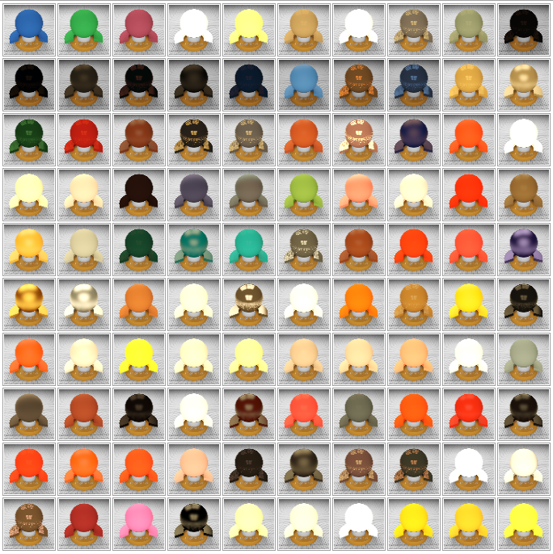
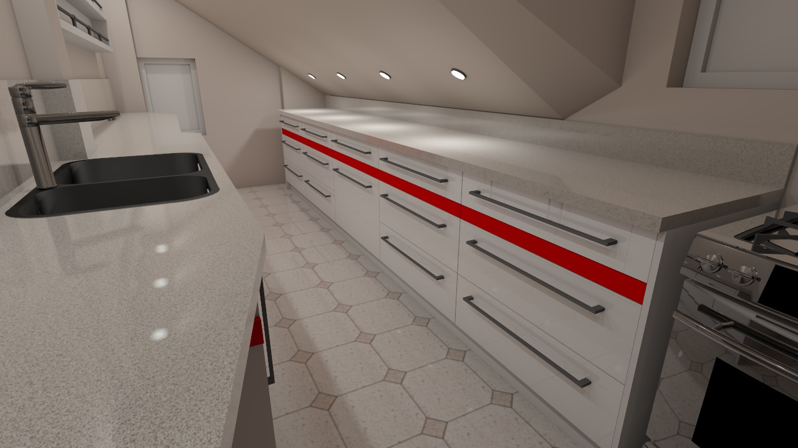

Hello Spring Renderers!
So, warmer times bring you a hotter version of Brighter3D!
Hot in many ways. For example, we have a better, improved interface,
streamlined and easier to use. Included with this new interface is an
embedded help system – you can use the question mark button to get instant
helper popups explaining the function of every button or field of every
interface window.
But the real hot improvement is in the (again) Material Editor Window. As
we strive to enhance the tools for realistic renderings, we added many
material presets, based on real life objects! You can get up to 100 presets
in PRO version, and 10 in the FREE one. These presets were created by
scientists by scanning and digitising real materials, resulting in over
100MB files per each material. Then this big chunk of information was
transformed in highly accurate mathematical functions, and thus were
created amazing profiles which you can now select from within Material
Editor.
Also, an amazing new feature is in the Lighting process. From now on, you
can create a light – an emitting object, adjust power, orientation,
colour temperature, accent etc. and then HIDE it. The light will affect the
scene and will compute, but the emitter itself will not stay in the way of
the viewer! Thus you can create excellent, realistic light compositions,
much like the photographers are compositing in a real setup with nice
accent light and effects. As it is said, the succes of a photo is 80% due
to its lighting composition. So, now, you can, too, create stunning
renderings, product shots, interior designs – like a true PRO.
Last, but not least, we have good news for PRO users, present, past and future.
We decided to give free updates, forever. Yes, that’s zero costs for future
updates, even for major versions. So, for you new users of this excellent
render plugin, grab your wallet (okay, your CC), and buy now the amazing
new PRO version of Brighter3D!
Stay tuned for new improvements. Happy Spring Renderings!

Hey Easy Renderers!
Trimble just released a most awaited 2015 version of SketchUp. Like, we like tomatoes, but this flavour is damn good! Joking.
But we are not joking about our baby, your most elegant and easy way to render all your SketchUp scenes. So, we updated Brighter 3D to version 2.2.0, which works natively in 64bit, just like SketchUp 2015. When installing, it automagically chooses 64bit or 32bit, according to your SketchUp installation, so you’ll not worry about that. Only thing you will worry, is why the heck is rendering so fast!
But only a second, then we’ll sure thing see your smile of satisfaction.
So, this version allows rocket-fast renderings, bigger scenes, bigger texture resolutions, with all the computer memory available at your hands.
We also fixed some minor issues. Keep tuned for new improvements soon.
We wish you a happy easy render!

Hi Easy Renderers! How’s your day today? Ours is great because we are happy to release a new version with blazingly efficient tools in the Materials department, and some minor enhancements overall.
First of all, any change in in Materials parameters will be now previewed in a Realtime window. No more “try and render”!
The changes will be instant, reflecting true lighting conditions. Of course, we remind you that in these Previews (also on Render and Effects Studio Window), you can Pan with the cursor, and zoomin/zoomout with the mouse’s wheel. Cool!
Also, we introduced Material Roughness property, which allows to render stunning blurry/fuzzy reflections in Unbiased Progressive Rendering Mode.
Speaking of real life, you have now two new presets for specific materials widely used: Phong BRDF and Ward BRDF, for plastic, and plastic/brushed steel/metal, respectively. These two functions are mature solutions widely used for creating realistic renderings.
We hope you’ll enjoy these enhancements, as much as we enjoyed creating them.
Happy and Easy Render to you all!
Please enjoy short video introduction in Full HD @1080 below:
Author of bar and bathroom scenes is Helena Michel
Check older entries >>